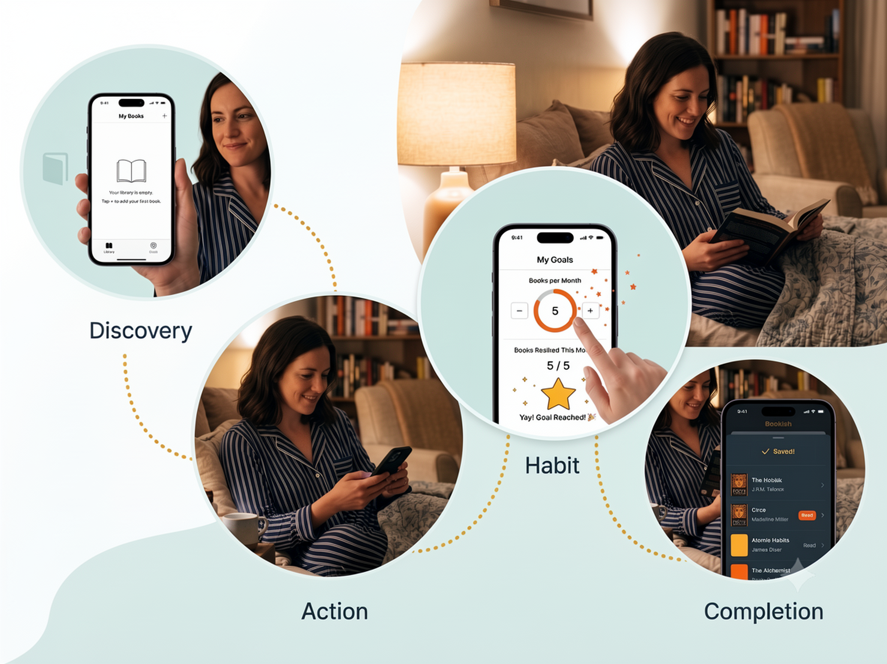

Bookish
Bookish — A Minimalist Reading Tracker
1. Introduction

In a world dominated by noisy social reading platforms, Bookish was born out of a desire for simplicity. Built for iPhone using SwiftUI and Xcode, Bookish is a distraction-free digital library companion designed to help readers catalog their books and consistently hit their reading milestones without unnecessary friction.
2. Overview
Role: Solo Product Designer & iOS Developer
Timeline: 4 Weeks
Platform: iOS 17+ (iPhone)
Tech Stack: SwiftUI, SwiftData, Xcode
3. The Problem
Modern reading tracking applications suffer from severe feature bloat. Users looking for a simple digital shelf are instead forced through complex social feeds, heavy community gamification, and confusing navigation paths. This turns the quiet, personal habit of reading into an intimidating administrative task, driving users away from tracking their books altogether.
4. Project Goals
- Zero Friction Cataloging: Enable users to log, view, and modify books in under three taps.
- Clear Habits Reinforcement: Create a clean, visually motivating goal tracker that encourages consistency without inducing guilt.
- Native iOS Fidelity: Utilize modern SwiftUI architecture and native components to make the app feel lightweight, snappy, and deeply integrated into the iOS ecosystem.
5. Research
Competitive analysis was conducted on prominent reading trackers (Goodreads, StoryGraph) alongside analogue tracking habits (bullet journaling). Key findings revealed that while power users enjoy extensive data analytics, the average reader abandons these platforms because setting up an entry takes too much effort, and the constant pressure of public social metrics diminishes the intrinsic joy of reading.
6. Key Insights
- The "Just Started" Drop-off: Users frequently abandon tracking when met with a cold, confusing empty state on their first app launch.
- Status Fluidity: A book’s lifecycle isn't linear. Readers switch back and forth between reading, pausing, or even abandoning books completely (Did Not Finish).
- Private Micro-Milestones: Users feel more motivated by small, adjustable personal metrics (e.g., a monthly target) than long-term, rigid yearly challenges.
7. Persona
Clara, 28 • The Intentional Reader
Bio: A busy marketing professional who reads to unwind before bed.
Needs: A clean, private interface to keep track of her stack of bedside books and a light motivational push to read a few pages every night instead of scrolling social media.
Frustrations: Hates cluttered UI, dislikes apps that require setting up an account just to log a single book, and finds public reading challenges performative and stressful.
8. User Journey Map

- Discovery: Clara opens Bookish for the first time and is greeted by a calm, clean screen.
- Action: She taps a single button to add her current novel, logs its basic info, and sets it to "Reading."
- Habit: Throughout the month, she updates her status, checks her progress bar on her goals tab, and experiences a delightful micro-interaction when she hits her target.
- Completion: She smoothly transitions the book to "Read," automatically updating both her personal library shelf and her monthly progress tracking.
9. How Might We (HMW)
- How might we make the process of adding and editing a book feel as instant and natural as turning a physical page?
- How might we design an empty library state that feels like an open invitation rather than a blank chore?
- How might we celebrate a user's reading milestones with minimalist visual design that rewards progress without feeling loud or overwhelming?
10. Information Architecture
The application layout relies on a clean, decentralized component tree designed to separate data models, view layouts, and persistent states cleanly within Xcode:
BookTracker (Root)
│
├── 📁 Models
│ ├── Book.swift # Core data model entity
│ └── BookStatus.swift # Status states (Read, Want to Read, DNF)
│
├── 📁 ViewModels
│ └── BookStore.swift # Central state manager & business logic
│
├── 📁 Views
│ ├── ContentView.swift # Root tab container
│ │
│ ├── 📁 Library
│ │ ├── LibraryView.swift # Main library list
│ │ ├── AddBookView.swift # New book form modal
│ │ ├── EditBookView.swift # Entry modification view
│ │ └── BookDetailView.swift # Detailed focus card
│ │
│ ├── 📁 Goals
│ │ └── GoalView.swift # Progress tracking screen
│ │
│ └── 📁 Components
│ ├── BookRow.swift # Custom list cell item
│ ├── StatusBadge.swift # Context-colored status label
│ └── EmptyLibraryView.swift # Onboarding placeholder view
│
└── 📁 Helpers & Assets
To support this structure cleanly, I implemented a native SwiftData schema mapping out a flexible, lightweight configuration for our core domain model:
import Foundation
import SwiftData
@Model
final class Book {
var title: String
var author: String
var status: BookStatus
var review: String
init(title: String, author: String, status: BookStatus = .wantToRead, review: String = "") {
self.title = title
self.author = author
self.status = status
self.review = review
}
}
enum BookStatus: String, Codable, CaseIterable {
case wantToRead = "Want to Read"
case reading = "Reading"
case read = "Read"
case dnf = "DNF"
}
11. User Flow
The primary user flows move effortlessly through a persistent, low-profile navigation map. As mapped out in the wireframes, the application is anchored by a two-tab split:
- Library Stream: Launch App ➔ Home (Library) ➔ Tap Book ➔ View Book Details ➔ Tap Edit ➔ Save Changes ➔ View Updated Library. Alternatively, users can clear entries via a swift slide gesture (Swipe Delete ➔ Remove Book).
- Goals Stream: Launch App ➔ Goals Tab ➔ Adjust Monthly Target ➔ Real-time Books Count Update ➔ Target Check (Conditional branch: If No ➔ Normal view; If Yes ➔ Celebration State).
12. Wireframes

The blueprint layout for Bookish emphasizes clear geometric proportions, generous negative space, and intuitive touch targets. It maps out a consistent, predictable lifecycle for screen interactions:
- Library (My Books): A scannable list featuring structured cells, each displaying a book cover silhouette, book metadata, and a dedicated status badge alignment.
- Add New Book & Edit Book: Symmetrical form layouts featuring clean text input fields and dropdown menus for status settings (Want to Read, Read, DNF).
- Goals & Celebration Screen: Minimalist stepping controls (− / +) paired with a horizontal progress indicator bar that transforms into a custom star element upon milestone achievement.
- Empty State: A delightful, low-weight icon-centered overlay that communicates structural purpose before any data is entered.
13. Design System

The visual style steps away from harsh stark blacks, choosing instead a warm, calming color spectrum reminiscent of an indie bookstore:
- Deep Charcoal (#2F4858): The primary typographic and dominant structural baseline.
- Warm Amber (#F6AE2D): Accent color indicating active focus points, primary call-to-actions, and interactive stepping controls.
- Terracotta Crimson (#F26419): Accent highlight used for celebratory conditions and goal states.
- Soft Mint (#D0E6E2): Low-contrast structural tint used for cards, text fields, and soft screen backdrops.
14. Final UI

By mapping the layout specifications from wireframes to SwiftUI views, the final interface achieves exceptional visual clarity. To bridge the layout gap between data entry and presentation contexts, I designed a fluid modal sheet utilizing native iOS presentation structures:
struct AddBookView: View {
@Environment(\.dismiss) private var dismiss
@Environment(\.modelContext) private var modelContext
@State private var title = ""
@State private var author = ""
@State private var status = BookStatus.wantToRead
var body: some View {
NavigationStack {
Form {
Section("Book Details") {
TextField("Enter book title", text: $title)
TextField("Enter author", text: $author)
}
Section("Status") {
Picker("Reading Status", selection: $status) {
ForEach(BookStatus.allCases, id: \.self) { status in
Text(status.rawValue).tag(status)
}
}
}
}
.navigationTitle("Add New Book")
.toolbar {
ToolbarItem(placement: .cancellationAction) {
Button("Cancel") { dismiss() }
}
ToolbarItem(placement: .confirmationAction) {
Button("Save") {
let newBook = Book(title: title, author: author, status: status)
modelContext.insert(newBook)
dismiss()
}
.disabled(title.isEmpty || author.isEmpty)
}
}
}
}
}
- The Core Shelf: Uses custom StatusBadges dynamically tinted to separate states effortlessly. The background relies on the calming undertone of the Soft Mint color space.
- Fluid Sheets: The Add and Edit workflows slide up as elegant modal sheets, configured with native `.presentationDetents([.medium, .large])` to keep user context grounded.
- Context-Aware Rows: Books dynamically display customized metadata, ensuring high typographic legibility using the Deep Charcoal font family against a clean layout grid.
15. Prototype

The live interactive prototype was built directly inside Xcode using SwiftUI's powerful live canvas previews. Transitions are incredibly fast, passing state data bindings between views automatically:
- Tapping a book cell triggers an intuitive NavigationLink push transition into the BookDetailView.
- The GoalView features an interactive stepper that recalculates progress instantly on screen, moving smoothly between standard tracking states and the targeted achievement milestone.
16. Testing & Iteration
Usability testing was conducted with a pool of five target readers using an Xcode simulator environment.
- Successes: Users praised the speed of logging a new book, completing the form in under 6 seconds on average. The Swipe-to-Delete gesture was highly discoverable due to native iOS familiarity.
- Iterations: Initial testers noted a lack of structural confirmation when editing a book—they felt unsure if their modifications had actively persisted. To solve this, I introduced explicit physical feedback to the save pipeline using a hardware notification engine:
Button("Save Changes") {
// 1. Commit the active local UI bindings directly to SwiftData Context
try? modelContext.save()
// 2. Resolve testing ambiguity by triggering physical hardware confirmation
let generator = UINotificationFeedbackGenerator()
generator.notificationOccurred(.success)
dismiss()
}
17. Reflection
Building Bookish highlighted the incredible harmony between product design and modern engineering workflows. Utilizing SwiftUI allowed for rapid iteration, transforming wireframes into clean, declarative code with minimal middleware. By focusing exclusively on fundamental user needs and avoiding feature creep, Bookish proves that a highly specialized, lightweight app can provide a far more rewarding experience than a massive, overcrowded platform.